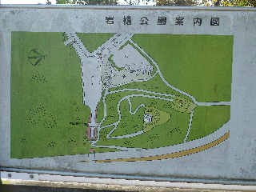
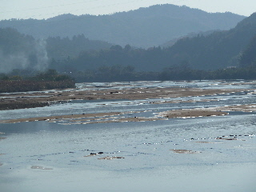
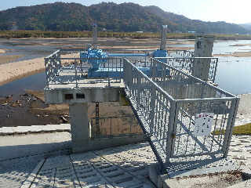
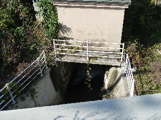
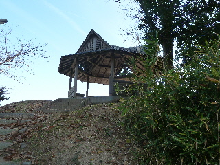
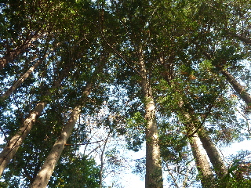
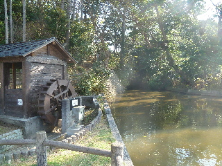

来原岩樋公園をちょっと散歩しました。
更新日 : 2014/11/24

看板の「岩樋公園案内図」の字の前が空いていますが、どうしてでしょう？消えちゃったのかな？

天気が良かったので、斐伊川が綺麗でした。

来原岩樋への水門です。

水門を通って、道路の下を通過し、公園に水が流れます。

公園には展望台があったりします。

公園には杉林があります。

ここから高瀬川が始まります。
詳しいことは検索して勉強してください。
公園にも説明が書いてありますが、ちょっとわかりづらいかな。